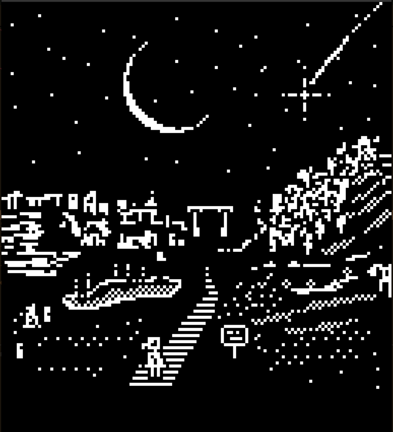

We traveled to Asia. Two weeks abroad exploring and visiting family in Taiwan and China. This was an incredible and demanding experience that I will remember forever. I have a lot of work ahead of me to curate my photography and make a Vindauga zine and blog post. The most lasting effects of this trip will certainly be my resolution to learn Mandarin. I want to be professionally fluent in 7 years.
Taipei City, Taiwan
Beijing, China
Xi'an, China
03J
Vindauga has come a long way and I am pleased to report that it has reached a final draft of sorts. I imagine I will be adding many features to it and refactoring some of the clutter for many months to come but the core functionality is there. A few of the final core components were: scene memory - the ability to navigate backards through previously visited scenes, music, text rendering, clickable visualization with debug switch. I was also able to find a memory leak which was causing the footprint to grow linearly with time. One of the first enhancements I intend to make is to dynamically load the scene images only when they are navigated to, at the moment all images are loaded once at the start of the program.
Otherwise we are scambling to prepare for our major adventure of the year: a 2-week trip to Taiwan and China! Very excited for this.
03I
I've been working hard on my point-and-click SDL2 game. So far so good! It's been incredibly rewarding to meet weekly with the boys, it has been keeping my progress steady. And it's also cool to see what other people are working on and how they flex their skills to make something interesting. I comfortably created a little scene where clicking on a region displays a new image, right clicking returns you to the starting image, all while some atmospheric music plays in the background. I hit a couple snags trying to flesh the system out into something fully extensible, I am currently trying to figure out a way to track what image the player is currently looking at and what they were previously looking at so that right-clicking takes you back to that image, not just to the starting image. The boys had a good suggestion of using a tree structure of some sort. I am calling the game vindauga, old-norse for "wind's eye", which was subsumed into the English language as "window". I've been keeping a log of all my developments, using my forth-based HTML parser myrr. You can read the blog here.
Download a .mkv video file to see a sample of vindauga in action here

03H
I'm trying to get back into running again. Leaping headlong into high mileage is not the move, though. I am quick to injury with my damned right leg. I expect I am going to eventually require surgery or targeted steroid injections of some kind.
As part of my weekly meetings with my coding crew I am getting back into programming in C. I'm a bit burnt out on following a tutorial line by line though I am very pleased by how much I've learned in this manner. I've been making a lot of 1bit drawings lately and figured this would be a good opportunity to make a game using those. I don't know the first thing about sprite sheets or game assets and certainly nothing about 3d assets. But, I can make decent 2d black and white art. Maybe I'll make a point and click adventure of some kind.
We protested against our demonstrably authoritarian government at Independence Hall.
03G
Down and down.
I developed a passing interest in the Forth programming language. Fascinating construction and a very different way of thinking about computation. I followed some guides and wrote a text-parsing program which takes a custom Markdown-like file (I call it Myrrtext) and makes the text HTML compliant. The program is built to recognize special characters within the Myrrtext and jumps to and executes special Forth functions (a.k.a. words) which modify the text or insert HTML element markers. In this sense, the Myrrtext itself is self-modifying.
We saw the peak of the Philadelphia cherry blossoms on a cold misty day. Brought my camera, but no great picture opportunities. Still, it was a fun outing with friends.
I've started meeting weekly with a group of friends to talk about our own programming projects as a way to stay motivated and accountable.
03F
Line go down down down.
03E
We went to Puerto Rico! We rented a car in San Juan from a highly questionable rental car company, which ended up being completely fine, and drove two and a half hours to the south western corner of the island. Guanica national forest. We relaxed at a beautiful beach resort and prepped for our purpose for being there: a wedding! And better yet, I was a groomsman! Such an honor and what a wonderful place to celebrate. Made some new friends too. Overall it was a very successful bout of travel, I'm proud of us for that.
I started working through a tutorial of making several video games in C. I intend to lear the language this way. I am at first resistant to the fact that I am basically resigned to copying the tutorial line by line, but I figure might as well develop the muscle memory of the language and hope I pick up some syntax quirks along the way. No need to make this hard.
Though I hate talking about politics here as it generally makes me angry and sad, I think it's important to note that I believe this jaunt marks the beginnings of a true constitutional crisis. The only thing I feel I have the power to do right now is be aware and live my life to the fullest in spite of the disaster around me.
03D
I learned how to roll over a 401k. I feel both financially responsible and savvy!
I consolidated all of my graphical and textual art programs into a my sonoshee project space. I was pleasantly surprised at the volume of genuinely cool pieces of generative art I've developed over the years.
Back to the Pw/S project, I want to revitalize my introductory physics knowledge in case I'll need it again soon (more on that later).
03C
More 1 bit drawings! I've mostly finished my fantasy world map and made two other drawings of some of the underground cities. It's fun posting these on Mastodon and Bsky. I like having these small communities of real (see: non-bot) people who I don't know in real life and yet still seem to like my creations. I even had someone say they liked my art style. I didn't even know I had a style. I didn't know I could ever have a style.
I've hit 50 subscribers on Pw/S! I've been streaming my Skyrim playthrough. Still no consistent viewers, but someone seems to like my stuff!
Went to a Flyers game in an ice storm for my friend's bachelor party. It was fun! And I cant wait for his wedding. The Eagles won the Superbowl the next day.
03B
I've continued toying with an idea for a fantasy world. A society many thousands of years in the future, all underground thriving in the caverns and rifts. I'm working some elements of magic in, but I like thinking about the political implications of the world. I don't have a driving hook yet but I'm going to stick with this and just assume something comes along eventually.
I started and completed the game Outer Wilds. The game was quite fun. I was tripped up a couple times though because of a constant habit of overthinking things. Since I knew absolutely nothing about the game going into it, I had no clue how complicated or not the puzzles were. No spoilers here, but if you want to watch me play through the whole thing, I've livestreamed everything on Pw/S.
I took apart my trusty laptop and replaced its CMOS battery! A painfully simple operation but just enough to get me used to staring into my computer's guts.
03A
A slow and sicky start to the year. Not a whole lot going on yet but I am excited to reset my priorities and start the year off with some intention. I've started using a wider array of the 100r/Varvara ecosystem, specifically Noodle for 1-bit drawings. I find it quite relaxing to draw something simple and am amazed at the level of artistry that exists in the 1-bit space. Some absolutely incredible pieces are out there in addition to seemingly endless possibilities for simple characters and icons. I can't wait to keep exploring. I've started making a map of an imaginary world as well which has been a lot of fun. I'll share it here on the wiki once I have some backstories written up.
Otherwise, I have been forcing myself to engage in the somewhat intimidating world of Linux. Installing packages and such is easy enough, but I recently had to do something that would have paralyzed me a few years ago: installing printer drivers. I didn't know what a driver was, why it was important, or what to do with it. Why can't I just plug a printer in and just print something?? I'm proud of myself though, I did the research and figured it out, and now I look back at my confused self and feel great knowing it was so easy to break out of that paralysis.
I purchased a suit for our upcoming wedding we are attending in Puerto Rico. I need to find a tailor next.
This year I have several goals that I am particularly excited about:
Clean out clothes and reorganize.
Go to a dry cleaners and tailor and figure out how all that works.
Replace my laptop's CMOS battery by following a guide.